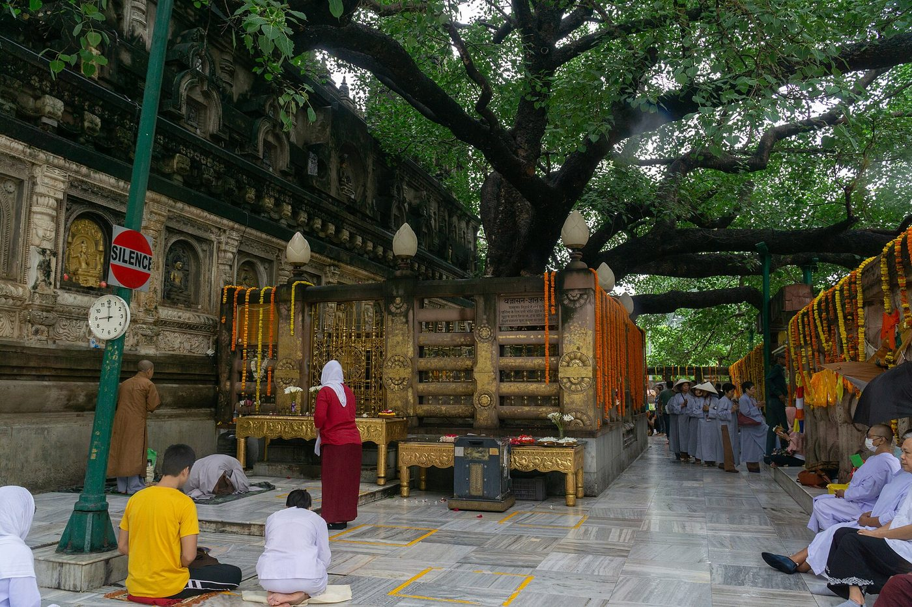
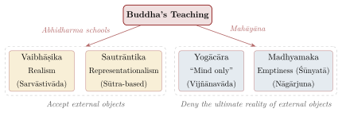

Chapter 10: Buddhist Philosophy — The Middle Way¶
The Dhammapada
sabbapāpassa akaraṇaṃ, kusalassa upasampadā
sacittapariyodapanaṃ, etaṃ buddhāna sāsanaṃ
To refrain from all evil, to cultivate the good, to purify one’s mind — this is the teaching of the Buddhas.
— Dhammapada 183
10.1 Introduction¶
Buddhist philosophy (Bauddha darśana) is one of the richest and longest-lived traditions of Indian thought. For more than fifteen hundred years Buddhist thinkers in India debated among themselves and with Brahmanical and Jain opponents, and many of the central problems of Indian philosophy — the nature of the self, the reality of universals, the criteria of valid knowledge, the analysis of causation — were set by Buddhist arguments. Indian Buddhism also gave rise to the philosophical traditions of Sri Lanka, Southeast Asia, Tibet, China, Korea and Japan.
This chapter outlines the early teachings, the Abhidharma schools, the two great Mahāyāna philosophies (Madhyamaka and Yogācāra), and the epistemological school of Dignāga and Dharmakīrti, before turning to ethics, the debate with Brahmanical schools, and the decline of Buddhism in India. Buddhist and Jain traditions as religions and institutions are treated in Vol. 4 of this series (Gethin 1998; Williams and Tribe 2000; Siderits 2007).
Brahmanical authors classified Buddhism as nāstika because it does not accept the authority of the Veda. Buddhists did not use this label of themselves; they saw their teaching (dharma) as the rediscovery, by an awakened human being, of the way things are.
Historical Note: The Buddha — The Awakened One
Siddhārtha Gautama of the Śākya clan was born, according to tradition, at Lumbinī (in present-day Nepal). Most scholars now favour a “short chronology” placing his death c. 400 BCE (lifetime c. 480–400 BCE); older scholarship followed the “long chronology” (c. 563–483 BCE), and the traditional Theravāda dating is 624–544 BCE. According to the traditional accounts he renounced household life, practised severe asceticism, abandoned it as fruitless, and attained awakening (bodhi) under a tree at Bodh Gayā. He then taught for some forty-five years in the Ganges plain. His teachings were transmitted orally and later written down in Pali (the Tipiṭaka of the Theravāda) and in Sanskrit and other Indian languages, much of which survives only in Chinese and Tibetan translation.
Figure 10.1 shows the Bodhi tree at Bodh Gayā.


10.2 The Foundational Teachings¶
10.2.1 The Four Noble Truths (Catvāry Āryasatyāni)¶
According to tradition, the Buddha’s first sermon (the Dhammacakkappavattana Sutta, Saṃyutta Nikāya 56.11) taught a “middle way” between sensual indulgence and self-mortification, and four truths:
The Four Noble Truths
-
Duḥkha (Suffering) — Life, as ordinarily lived, is characterized by suffering and unsatisfactoriness: birth, ageing, sickness, death, separation from the loved, and, in short, the five aggregates of grasping
-
Samudaya (Origin) — Suffering arises from tṛṣṇā (craving, “thirst”) — craving for sensual pleasure, for existence, and for non-existence
-
Nirodha (Cessation) — Suffering can cease; nirvāṇa (“blowing out” of greed, hatred and delusion) is attainable
-
Mārga (Path) — The Noble Eightfold Path (āryāṣṭāṅgika mārga) is the way to cessation
10.2.2 Dependent Origination (Pratītyasamutpāda)¶
For the philosophers, dependent origination is the doctrine on which everything else turns, since it replaces both a permanent self and a creator with a network of conditions. Its abstract formula recurs throughout the early discourses (its place in the Buddha’s teaching as a religious path is described in Vol. 4, Buddha–Jina Prabhā):
Dependent Origination
imasmiṃ sati idaṃ hoti, imassuppādā idaṃ uppajjati
imasmiṃ asati idaṃ na hoti, imassa nirodhā idaṃ nirujjhati
When this exists, that comes to be; with the arising of this, that arises. When this does not exist, that does not come to be; with the cessation of this, that ceases.
— e.g. Saṃyutta Nikāya 12.21; Majjhima Nikāya 38
Nothing that we experience exists independently; everything arises in dependence upon conditions. Applied to the human situation, the principle is set out in a chain of twelve links (nidānas), which later tradition interpreted as spanning three lives (Table 10.1):
| No. | Sanskrit | Pali | Meaning |
|---|---|---|---|
| 1 | Avidyā | Avijjā | Ignorance (of the four truths) |
| 2 | Saṃskāra | Saṅkhāra | Volitional formations |
| 3 | Vijñāna | Viññāṇa | Consciousness |
| 4 | Nāmarūpa | Nāmarūpa | Name-and-form (mind and body) |
| 5 | Ṣaḍāyatana | Saḷāyatana | The six sense-bases |
| 6 | Sparśa | Phassa | Contact |
| 7 | Vedanā | Vedanā | Feeling |
| 8 | Tṛṣṇā | Taṇhā | Craving |
| 9 | Upādāna | Upādāna | Grasping |
| 10 | Bhava | Bhava | Becoming |
| 11 | Jāti | Jāti | Birth |
| 12 | Jarāmaraṇa | Jarāmaraṇa | Ageing and death |
10.2.3 The Three Marks and the Five Aggregates¶
All conditioned things share three marks (trilakṣaṇa):
-
Anitya (Pali anicca, impermanence) — All conditioned phenomena are impermanent
-
Duḥkha (dukkha, unsatisfactoriness) — All conditioned phenomena are unsatisfactory
-
Anātman (anattā, non-self) — No phenomenon is a permanent, unchanging self
The doctrine of anātman is the most philosophically consequential Buddhist teaching, directly challenging the ātman doctrines of the Upaniṣads, Sāṃkhya, Nyāya and Vedānta. A person is analysed into five aggregates (skandhas): material form (rūpa), feeling (vedanā), perception or recognition (saṃjñā), volitional formations (saṃskāra) and consciousness (vijñāna). In the Anattalakkhaṇa Sutta (Saṃyutta Nikāya 22.59) the Buddha argues that none of these can be the self: each is impermanent, and each is subject to affliction and not under our control, whereas a self would be permanent and under our control. Nor is there a self apart from them.
The best-known illustration is the chariot simile, used by the nun Vajirā in the Saṃyutta Nikāya (5.10) and developed in the Milindapañha: just as “chariot” is a name for an assemblage of parts, none of which is the chariot, so “person” is a conventional designation for the aggregates. The person is real as a convention, not as an ultimate entity. Buddhism thus steers a “middle way” between eternalism (śāśvatavāda, a permanent self) and annihilationism (ucchedavāda, nothing continues). Karma, defined as intention (cetanā, Aṅguttara Nikāya 6.63), connects one life to the next through a causal stream, without a transmigrating self.
The Buddha also refused to answer certain speculative questions — whether the world is eternal, whether the soul is the same as the body, whether the Tathāgata exists after death — declaring them “undetermined” (avyākṛta) and unprofitable for the path.
10.3 Early Schools and the Abhidharma¶
Within two centuries of the Buddha’s death the community had divided, first into the Sthaviras (“Elders”) and the Mahāsāṅghikas, and later into the traditional “eighteen schools”. Their disputes concerned monastic discipline and doctrine, and their most important philosophical achievement was the Abhidharma (“higher teaching”): the systematic analysis of experience into its ultimate constituents, the dharmas.
10.3.1 The Abhidharma Project¶
Abhidharma thinkers distinguished conventional truths, which concern composite things like persons and chariots, from ultimate truths, which concern the momentary dharmas of which composites are made. Each dharma is defined by its “own nature” (svabhāva) or own characteristic. The Pali Abhidhamma of the Theravāda (seven canonical books, interpreted by Buddhaghosa in the 5th century CE and summarised in later manuals such as Anuruddha’s Abhidhammatthasaṅgaha) recognises four kinds of ultimate reality: consciousness (citta), mental factors (cetasika), matter (rūpa) and nibbāna.
10.3.2 Sarvāstivāda (Vaibhāṣika)¶
The Sarvāstivāda school, powerful in north-western India and Kashmir, is named after its thesis that “everything exists” (sarvam asti) in all three times: past and future dharmas exist as well as present ones. Its followers argued that past dharmas must exist because they can be objects of cognition and because past actions bear fruit. The great commentary, the Mahāvibhāṣā (c. 2nd century CE), gave the school its later name, Vaibhāṣika. The Sarvāstivādins classified 75 dharmas in five groups (Table 10.2):
| Group | Number | Content |
|---|---|---|
| Rūpa (matter) | 11 | Five sense organs, five sense objects, and “unmanifest” matter |
| Citta (mind) | 1 | Consciousness |
| Caitasika (mental factors) | 46 | Feeling, perception, intention, attention, faith, greed, hatred, etc. |
| Cittaviprayukta saṃskāra (forces dissociated from mind) | 14 | Acquisition, origination, duration, decay, impermanence, life-force, etc. |
| Asaṃskṛta (unconditioned) | 3 | Space and two kinds of cessation (one of them nirvāṇa) |
10.3.3 Sautrāntika and the Doctrine of Momentariness¶
The Sautrāntikas (“those who follow the sūtras”) rejected the Sarvāstivāda thesis: only the present moment exists, and dharmas perish as soon as they arise. They held that we never perceive external objects directly; consciousness takes on the “form” (ākāra) of the object, and the object itself is inferred as the cause of that form. The doctrine of universal momentariness (kṣaṇikavāda) became a hallmark of later Buddhist philosophy: since destruction needs no cause, whatever exists perishes in the very moment after it arises. Later epistemologists argued that to exist is to be causally efficacious (arthakriyā), and that only momentary things can be efficacious; Ratnakīrti (11th century) summarised the thesis as “whatever exists is momentary”.
Vasubandhu’s Abhidharmakośa (c. 4th–5th century CE), whose verses summarise Vaibhāṣika doctrine while its auto-commentary (bhāṣya) often criticises it from a Sautrāntika standpoint, became the standard Abhidharma textbook in India, Tibet and East Asia (Gold 2015).
10.3.4 The Personalists (Pudgalavāda)¶
One group of schools, the Vātsīputrīyas and Sāmmitīyas, held that there is a “person” (pudgala) that is neither identical with nor different from the aggregates — a position they thought necessary to explain memory, karma and rebirth. Other Buddhists regarded this as a covert return to the self; Vasubandhu devoted the ninth chapter of the Abhidharmakośabhāṣya to refuting it. The Sāmmitīyas were nonetheless among the largest schools of India, according to the Chinese pilgrim Xuanzang (7th century).
10.4 The Major Philosophical Schools in Later Classification¶
Later Indian and Tibetan doxographies, and Brahmanical surveys such as the Sarvadarśanasaṅgraha, reduced the variety of Buddhist thought to four “schools”. The scheme is a simplification, but it is widely used (Figure 10.2):

10.5 Mahāyāna and the Madhyamaka¶
10.5.1 The Mahāyāna¶
From around the 1st century BCE new sūtras appeared that presented themselves as the word of the Buddha and taught the path of the bodhisattva, who seeks full Buddhahood for the sake of all beings, rather than the arhat’s personal liberation. The earliest of these, the Perfection of Wisdom (Prajñāpāramitā) sūtras, taught that all dharmas, including those of the Abhidharma lists, are “empty” (śūnya). Mahāyāna was for centuries a minority movement within monasteries that also housed non-Mahāyāna monks.
10.5.2 Nāgārjuna¶
Nāgārjuna (c. 2nd century CE), probably a monk of south India, gave the doctrine of emptiness philosophical form in the Mūlamadhyamakakārikā (“Fundamental Verses on the Middle Way”, 27 chapters) and shorter works such as the Vigrahavyāvartanī (Garfield 1995; Westerhoff 2009). His target is the Abhidharma notion of svabhāva, “own-being” or intrinsic nature. If a thing had intrinsic nature, it would be independent of causes and conditions; but everything that exists arises dependently; therefore nothing has intrinsic nature. The work opens with a fourfold denial of origination:
The Opening Verse of the Madhyamaka
na svato nāpi parato na dvābhyāṃ nāpy ahetutaḥ
utpannā jātu vidyante bhāvāḥ kva cana ke cana
Not from themselves, not from another, not from both, nor without a cause do any entities whatever, anywhere, ever arise.
— Mūlamadhyamakakārikā 1.1
Nāgārjuna’s characteristic method is to show that every view which assumes intrinsic natures — about causation, motion, time, the self, the aggregates, even nirvāṇa — leads to absurd consequences (prasaṅga). He often examines four alternatives (catuṣkoṭi): that something is, is not, both, or neither, and rejects all four.
Śūnyatā — Emptiness
-
All phenomena (dharmas) are empty (śūnya) of intrinsic existence (svabhāva)
-
Emptiness is not non-existence: things exist conventionally, as dependently arisen
-
Emptiness is dependent origination — two descriptions of the same fact (verse below)
-
Emptiness is itself empty: it is not a hidden absolute behind appearances
-
The two truths: saṃvṛti-satya (conventional truth) and paramārtha-satya (ultimate truth); “without relying on the conventional, the ultimate is not taught” (Mūlamadhyamakakārikā 24.10)
Nāgārjuna’s Central Verse
yaḥ pratītyasamutpādaḥ śūnyatāṃ tāṃ pracakṣmahe
sā prajñaptir upādāya pratipat saiva madhyamā
What is dependent origination, that we declare to be emptiness. It is a dependent designation and is itself the Middle Way.
— Mūlamadhyamakakārikā 24.18
Opponents — Naiyāyikas, Mīmāṃsakas and other Buddhists — accused Nāgārjuna of nihilism and of self-refutation: if all statements are empty, so is the statement that all things are empty. In the Vigrahavyāvartanī (verse 29) he replies that he has no thesis of his own (nāsti ca mama pratijñā) that could be refuted; his arguments work by drawing out the consequences of his opponents’ assumptions. The Nyāya Sūtra itself seems to respond to such arguments, which is one reason for dating its final redaction after Nāgārjuna.
10.5.3 Later Madhyamaka¶
Nāgārjuna’s disciple Āryadeva wrote the Catuḥśataka. In the 6th century Bhāviveka argued that Mādhyamikas may advance independent (svatantra) inferences of their own, while Buddhapālita and, in the 7th century, Candrakīrti (Prasannapadā, Madhyamakāvatāra) held that the Mādhyamika should only draw out the absurd consequences (prasaṅga) of others’ views. The labels “Svātantrika” and “Prāsaṅgika” for these positions were coined later in Tibet. Śāntideva (8th century) expressed Madhyamaka ethics and the bodhisattva ideal in the Bodhicaryāvatāra.
10.5.4 Śāntarakṣita and Kamalaśīla¶
Śāntarakṣita (c. 725–788) combined Madhyamaka with Yogācāra and with Dharmakīrti’s epistemology in the Madhyamakālaṅkāra. His Tattvasaṅgraha, with the commentary of his pupil Kamalaśīla, is an encyclopaedic critique of every rival school — Nyāya-Vaiśeṣika categories and theism, Sāṃkhya’s prakṛti, Mīmāṃsā’s authorless Veda and the eternity of sound, Jain anekānta, the Cārvākas, and the Buddhist Personalists — and is one of our best sources for the doctrines of the period. Both men travelled to Tibet, where Śāntarakṣita helped found the first monastery at Samye.
10.6 Yogācāra (Vijñānavāda)¶
The Yogācāra (“practice of yoga”) school takes its name from the meditative experience of its founders; it is also called Vijñānavāda (“doctrine of consciousness”). Its scriptural basis is the Saṃdhinirmocana Sūtra; its classical authors are Asaṅga (Yogācārabhūmi, Mahāyānasaṃgraha) and Vasubandhu (Viṃśatikā, Triṃśikā, Trisvabhāvanirdeśa), traditionally brothers, of the 4th–5th century CE. Some works are ascribed to Maitreya, whom tradition regards as a celestial bodhisattva and some scholars as a human teacher.
Yogācāra: “Mind Only”
-
Vijñaptimātratā (“mere representation”) — What we experience as external objects are representations in consciousness; there are no material objects existing apart from the mind
-
The ālayavijñāna (store-consciousness) — A subliminal stream of consciousness that holds the “seeds” (bīja) left by past actions and experiences, from which future experiences ripen
-
Eight consciousnesses: the five sense-consciousnesses, mental consciousness (manovijñāna), the afflicted mind (kliṣṭa manas) that mistakes the store-consciousness for a self, and the store-consciousness itself
-
The three natures (trisvabhāva): the imagined (parikalpita) nature of subject and object as separate; the dependent (paratantra) nature, the causal flow of experience; and the perfected (pariniṣpanna) nature, the dependent nature empty of the imagined duality
In the Viṃśatikā (“Twenty Verses”) Vasubandhu answers the objection that, if there are no external objects, experience could not be fixed in place and time, shared by several people, or causally effective. Dreams, he replies, show all three features: dream objects appear at particular places and times; hungry ghosts (pretas) collectively see a river of pus where humans see water; and dream experiences can have real bodily effects. He then argues that external objects cannot be made of atoms, since a partless atom cannot combine with others to form an extended body (see Chapter 3).
Whether Yogācāra is an “idealism” in the Western sense is debated by modern scholars: some read it as metaphysical idealism, others as an epistemological or phenomenological analysis of experience that brackets the question of external objects. The school’s doctrine of the reflexive awareness of consciousness (svasaṃvedana) was taken up by Dignāga and Dharmakīrti. Through Xuanzang’s translations, Yogācāra became the basis of the East Asian Faxiang school.
10.7 Buddhist Epistemology: Dignāga and Dharmakīrti¶
From the 5th century onwards the Buddhist “epistemological school” (pramāṇavāda) transformed Indian philosophy. Its founders were:
-
Dignāga (c. 480–540 CE) — Author of the Pramāṇasamuccaya with its auto-commentary, the Nyāyamukha and the Ālambanaparīkṣā (Hattori 1968; Hayes 1988)
-
Dharmakīrti (6th–7th century; often dated c. 600–660 CE, though some recent scholars place him c. 550–610) — Author of the Pramāṇavārttika, Pramāṇaviniścaya and Nyāyabindu, the most influential work of Buddhist epistemology (Dunne 2004)
Their successors included Dharmottara, Prajñākaragupta, Jñānaśrīmitra and Ratnakīrti (10th–11th centuries), who defended momentariness and the apoha theory against Nyāya and Mīmāṃsā critics.
10.7.1 Two Means of Knowledge for Two Kinds of Object¶
Dignāga argued that there are exactly two means of knowledge because there are exactly two kinds of object: the unique, momentary particular (svalakṣaṇa), which is real and causally efficacious, and the general characteristic (sāmānyalakṣaṇa), which is a mental construction. Perception grasps the first, inference the second.
Buddhist Epistemology
-
Pratyakṣa (Perception) — “Perception is free from conceptual construction” (pratyakṣaṃ kalpanāpoḍham, Dignāga, Pramāṇasamuccaya 1.3). It is a direct, non-conceptual awareness of the particular. Dharmakīrti adds that it must also be non-erroneous, and recognises four kinds: sense perception, mental perception, reflexive self-awareness (svasaṃvedana) and yogic perception
-
Anumāna (Inference) — Conceptual, indirect knowledge through a logical mark. Inference grasps a general characteristic, which is a construction, not a real universal; yet it leads indirectly to the real, as when one infers fire and finds it
Testimony and the other pramāṇas of the Brahmanical schools are treated as forms of inference or rejected. Dharmakīrti defines a means of knowledge as “non-deceptive cognition” (pramāṇam avisaṃvādi jñānam, Pramāṇavārttika 2.1), i.e. cognition that does not let us down in practical action.
The definition of perception as kalpanāpoḍha is Dignāga’s, not Nyāya’s; Naiyāyikas such as Uddyotakara and Vācaspati criticised it, though they came to recognise an initial non-conceptual stage (nirvikalpaka) of perception in their own terms.
10.7.2 The Triple Mark of a Valid Reason¶
Dignāga formulated the conditions of a valid reason as three marks (trairūpya):
-
Pakṣadharmatva — the reason is present in the subject (smoke is on the hill);
-
Sapakṣe sattvam — it is present in at least some similar instances (smoke in a kitchen, where there is fire);
-
Vipakṣe asattvam — it is absent from all dissimilar instances (no smoke in a lake, where there is no fire).
His “wheel of reasons” (hetucakra) systematically classified the nine possible combinations of presence and absence in similar and dissimilar instances, showing which yield valid reasons. Dharmakīrti went further: the third mark can be guaranteed only if the reason is essentially connected (svabhāva-pratibandha) to what is proved, either by identity of nature (tādātmya) — “this is a tree, because it is a śiṃśapā” — or by causation (tadutpatti) — “there is fire, because there is smoke”. To these two kinds of reason he added a third, non-perception (anupalabdhi), for proving absence.
In an argument for others (parārthānumāna), Dignāga required a thesis, a reason and an example; the example statement already contains the universal rule (“wherever there is smoke there is fire, as in a kitchen”), so that the Nyāya’s application and conclusion are redundant. Dharmakīrti held that even the thesis need not be stated: the reason and the pervasion suffice.
10.7.3 The Doctrine of Apoha (Exclusion)¶
Dignāga’s theory of apoha is a landmark in the philosophy of language:
-
Words do not denote real universals, since there are none
-
A word like “cow” functions by excluding what is not a cow: its meaning is “exclusion of others” (anyāpoha)
-
The theory allows Buddhist nominalism to explain language without positing real universals
Kumārila and the Naiyāyikas objected that knowing “this is not a non-cow” presupposes knowing what a cow is. Dharmakīrti and later Buddhists (Śāntarakṣita, Ratnakīrti) refined the theory, explaining exclusion in terms of conceptual images formed from experiences of particulars that have the same effects.
10.7.4 Rebirth, Omniscience and God¶
The epistemologists also used their logic in defence of Buddhist doctrine. In the second chapter of the Pramāṇavārttika, Dharmakīrti argues against the materialists that consciousness cannot arise from matter alone, since each moment of consciousness must have a prior moment of consciousness as its material cause — hence rebirth. He argues that the Buddha is a reliable authority (pramāṇabhūta) because his teaching on the matters that count for liberation is non-deceptive, and he and his successors rejected Nyāya’s arguments for a creator God.
10.8 Buddhist Ethics and Soteriology¶
10.8.1 The Eightfold Path¶
The Buddhist path to liberation consists of eight factors, grouped into three trainings (Table 10.3):
| Training | No. | Factor | Description |
|---|---|---|---|
| Prajñā (Wisdom) | 1 | Samyag-dṛṣṭi | Right View |
| 2 | Samyak-saṅkalpa | Right Intention | |
| Śīla (Ethics) | 3 | Samyag-vāc | Right Speech |
| 4 | Samyak-karmānta | Right Action | |
| 5 | Samyag-ājīva | Right Livelihood | |
| Samādhi (Meditation) | 6 | Samyag-vyāyāma | Right Effort |
| 7 | Samyak-smṛti | Right Mindfulness | |
| 8 | Samyak-samādhi | Right Concentration |
10.8.2 The Bodhisattva Path¶
Mahāyāna ethics centres on the bodhisattva, who generates the “mind of awakening” (bodhicitta) and practises six perfections (pāramitās): generosity, ethical conduct, patience, vigour, meditation and wisdom. Compassion (karuṇā) and wisdom (prajñā) are described as the two wings of the path; Śāntideva argues that, since there is no self, there is no reason to prefer my own suffering’s removal to anyone else’s.
10.8.3 Caste and Gender¶
The early texts contain sharp criticism of brahmin claims to superiority by birth. In the Assālāyana Sutta (Majjhima Nikāya 93) and the Vāseṭṭha Sutta the Buddha argues that one is a true brahmin by conduct, not birth, and the order admitted members of all classes. The Vajrasūcī, a critique of caste ascribed to Aśvaghoṣa (attribution disputed), carries the argument further. The Buddha also founded an order of nuns, whose verses survive in the Therīgāthā, one of the earliest collections of women’s religious poetry in the world; the monastic rules, however, subordinated nuns to monks through the “eight heavy rules” (garudhammas). Buddhist societies did not abolish caste or gender hierarchy, but the tradition provided resources for criticising them that B.R. Ambedkar later drew on (Ambedkar 1957; Gethin 1998).
10.9 The Debate with Brahmanical Schools¶
The interaction between Buddhist and Brahmanical philosophers produced some of the finest argumentation in Indian history. Its main issues — the self against the causal stream, real universals against exclusion, enduring things against momentariness, the number of means of knowledge, the intrinsic validity claimed for the Veda, and the existence of God and of an omniscient teacher — are taken up from the Brahmanical side in the chapters on Nyāya (Section 2.9) and Mīmāṃsā (Section 6.13) and compared in Chapter 13. The debate was not one-sided. Dharmakīrti’s successors answered Kumārila and Uddyotakara point by point; Udayana’s Ātmatattvaviveka (“Discrimination of the Truth about the Self”) is largely a refutation of Ratnakīrti and his predecessors; and the Śaiva non-dualists built their theory of the self from Buddhist materials (Chapter 12). The arguments of each side are hard to understand without those of the other (Matilal 1986).
10.10 The Decline of Buddhism in India¶
Buddhism declined in most of India between the 7th and the 13th centuries, though it survived much longer in Bengal, Bihar, Odisha, Kashmir and the Himalayan regions. Historians attribute the decline to several interacting causes rather than to any single event:
-
Institutional concentration: late Indian Buddhism was concentrated in large monasteries dependent on royal patronage, with relatively weak ties to lay communities; when patronage shifted, these institutions were vulnerable
-
Competition and assimilation: devotional Śaiva and Vaiṣṇava movements and Brahmanical temple religion attracted lay support, and Buddhist practices and figures were absorbed into Hindu worship (the Buddha was even counted as an avatāra of Viṣṇu)
-
Philosophical and polemical pressure: Brahmanical philosophers answered Buddhist arguments in detail, although later hagiographies greatly exaggerate the role of individuals such as Kumārila and Śaṅkara
-
Destruction of monasteries: the great monastic centres of Bihar and Bengal — Nālandā, Vikramaśilā, Odantapurī — were sacked by Turkic armies around 1200 CE, and monks fled to Nepal and Tibet; this ended an already weakened institutional tradition
Buddhism continued in Sri Lanka, Southeast Asia, the Himalayas, Tibet and East Asia. In India it revived in the modern period through the work of Anagārika Dharmapāla’s Maha Bodhi Society (founded 1891) and, above all, through B.R. Ambedkar, who converted to Buddhism at Nagpur on 14 October 1956 together with a very large number of followers, mostly from communities treated as “untouchable”. His The Buddha and His Dhamma presents Buddhism as a rational and egalitarian social philosophy (Ambedkar 1957).
10.11 Legacy and Influence¶
Nāgārjuna’s critique of intrinsic nature is one of the most radical arguments in the history of philosophy, and Dignāga and Dharmakīrti reshaped the agenda of Indian epistemology: Nyāya, Mīmāṃsā, Jain logic and Kashmiri Śaivism all developed in response to them. Outside India, Buddhist philosophy shaped the intellectual traditions of Tibet, China, Korea, Japan and Southeast Asia, and contemporary philosophers engage its arguments on personal identity, part and whole, consciousness and language (Siderits 2007). Its relations to Yoga (Chapter 5) and to Jain philosophy (Chapter 11) are discussed in those chapters.